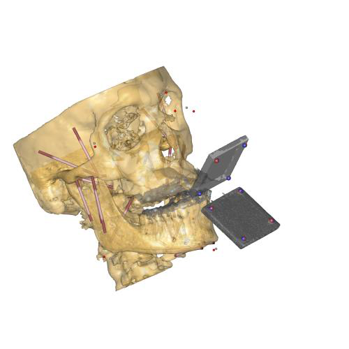

The Aalborg Mandible model¶
This is a validation example of mandible model based on a CT scan of a 40 year old male.
The model was developed for two purposes:
Demonstration of how to apply force-dependent kinematics (FDK) for modeling of the temporomandibular joint (TMJ)
Validation of the predicted mandible kinematics with the FDK TMJ model and comparison to a simpler point-on-plane (POP) model.
You can read more about this model and the validation in: Andersen MS, de Zee M, Damsgaard M, Nolte D, Rasmussen J. 2017. Introduction to Force-dependent Kinematics: Theory and Application to Mandible Modeling. Journal of Biomechanical Engineering, 139(9), 091001. DOI: 10.1115/1.4037100.
The work was supported by the Sapere Aude program of the Danish Council for Independent Research under grant number: DFF-4184-00018.
See also
Model location in AMMR:
How to run the model¶
Under the Trials folder, there are six folders with the recorded trials. One of
these is a static reference trial (Static0001), which is used to register the
brace to the CT scan. This model can be run by loading the
file: AnalysisFreeMovement.any and run the operation “AnalysisMandible”. The
results of this are saved in text files in the folder and used by the other
trials.
In the remaining trial folders, there are five AnyScript files:
TrialSpecificData.anyAnalysisFreeMovement.anyAnalysisPlanar.main.anyAnalysisFDK.main.any
The TrialSpecificData.any file contain information about the trial to analyse
including start and end times.
The three other files are all loadable and are used to run the model with either
no TMJ model (AnalysisFreeMovement.any), with the POP joint model
(AnalysisPlanar.main.any) and the FDK TMJ (AnalysisFDK.main.any). To run each of
these, load the main file and run the operation “AnalysisMandible”.
If you have any questions or comments, please do not hesitate to contact the author.
